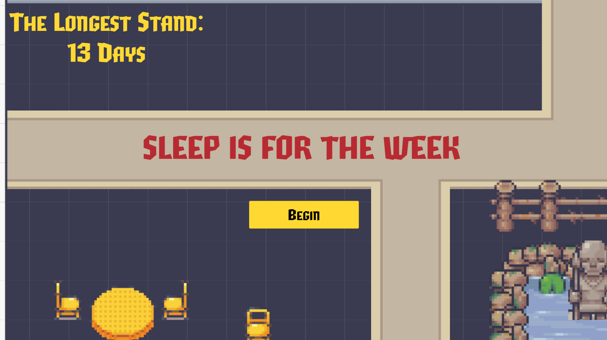
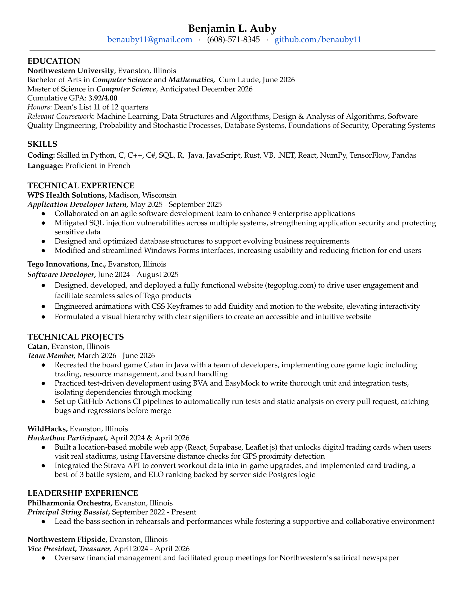

Catan, built from scratch
A full implementation of the Catan board game, built with a team under strict engineering discipline: test-driven development, boundary value analysis, EasyMock for isolating dependencies, and SpotBugs and CheckStyle enforced on every commit.
I worked on the core game model, classes like BoardHandler, Port, Hex, Robber, and GameModel, and wrote integration and unit tests as the codebase grew.

Guitar Hero, played on a Micro:bit
A Guitar Hero–style game utilizing three separate Micro:bits, all communicating wirelessly. One connected to a glove to detect finger flexion, another inside a 3D-printed guitar pick to detect strumming, and a third running the actual game logic and display.
We converted self-recorded guitar strums into arrays used in PWM cycles for audio playback, and wrote drivers for most of the sensors. One of my favorite projects I've ever worked on!

Interactive coral reef
A 3D underwater scene for a computer graphics course, which required OBJ model parsing, Phong lighting, texture mapping, caustic light patterns on the seafloor, volumetric light rays through the water, and a skybox cubemap holding it all together.
Time the shark's animation cycle to hunt down and eat a goldfish, or tap spacebar to propel the jellyfish upward. A full camera system lets you move through the scene, with both orthographic and perspective views.

Sleep is for the Week
A Vampire Survivors–style game built for a game design course focused on interactive and progressive gameplay. Waves of enemies scale up as you survive longer, and the player steadily unlocks new abilities and upgrades.
I built four unlockable weapons, each with a distinct attack pattern that changes how you play as your run progresses. I also handled character and camera movement, tuning aspects such as movement smoothing and predictive camera tracking.
Resume
